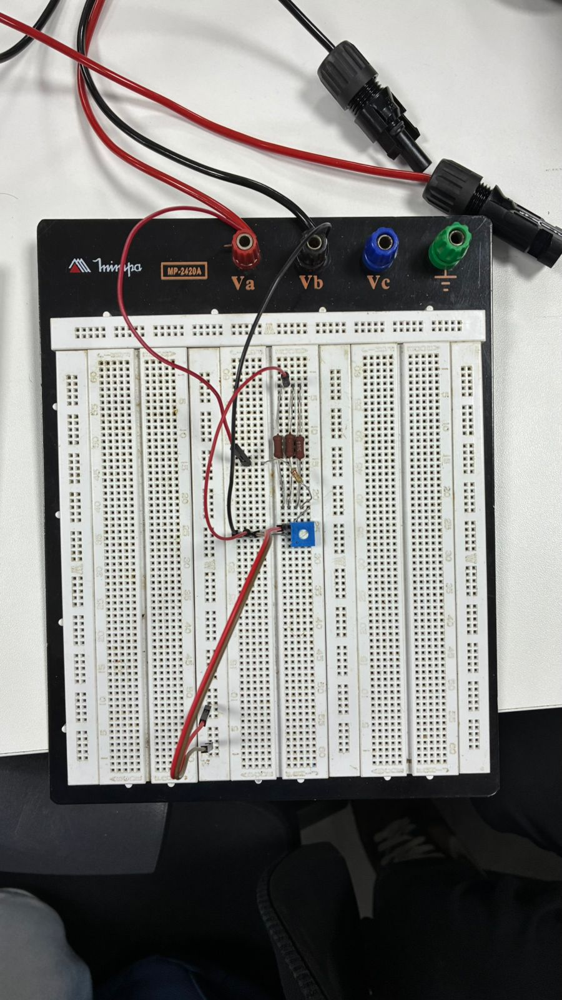
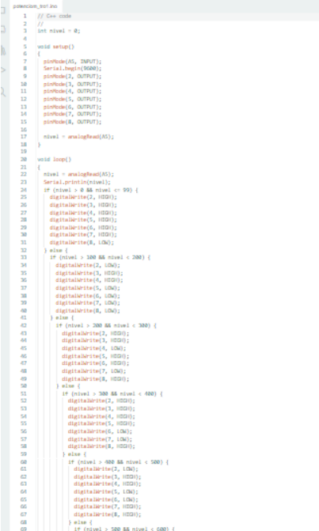
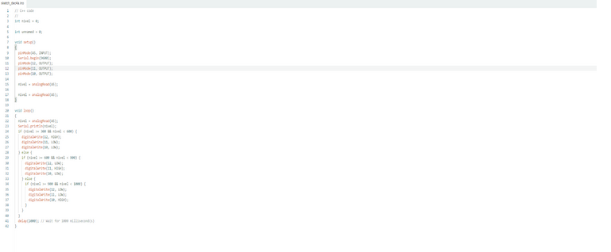
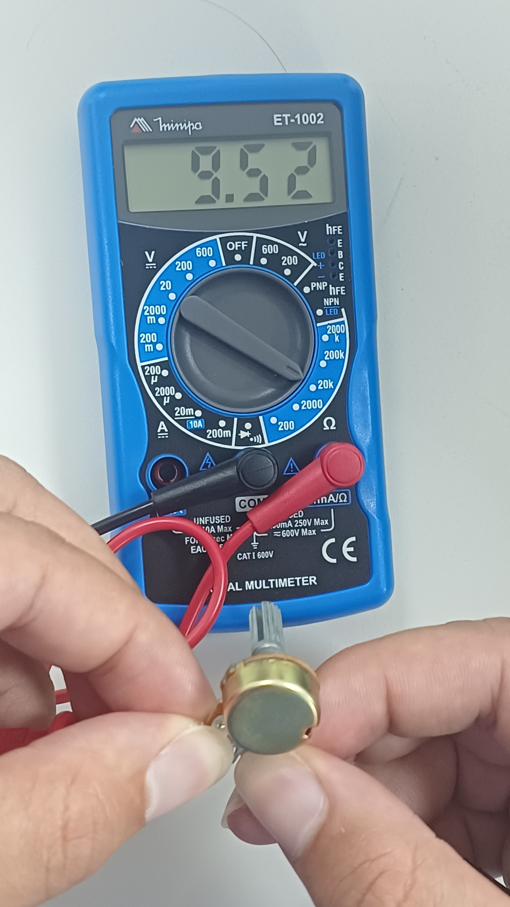

Testes Práticos com Arduino e Multímetro
Veja aqui as demonstrações práticas de como o Arduino e o Multímetro são usados para criar e diagnosticar circuitos eletrônicos.
Projeto: Níveis de Iluminamento com LEDs e Display de 7 Segmentos
Ligações no Tinkercad e Protoboard
Aqui você pode ver o esquema de ligação do projeto no ambiente de simulação e na prática.
Print da ligação eletrônica do Arduino no Tinkercad:


Foto da ligação física no protoboard:
Código de Programação
Este é o código C++ que controla os níveis de iluminamento, LEDs e o Display de 7 Segmentos.
 Medições com o Multímetro e Demonstração e Monitoramento
Aqui estão as medições realizadas com o Multímetro em diferentes componentes e pontos do circuito e O sistema funcionando e os dados sendo monitorados pelo Arduino IDE.
Foto da medição da resistência no potenciômetro de 10 k ohms:
Vídeos dos Testes: